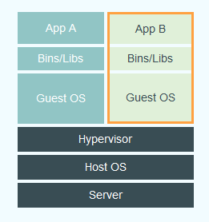
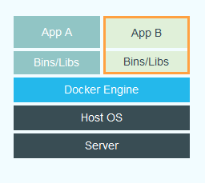

Build, Ship and Run
Any App, Anywhere
Presentation by: Michal Vanko <michal.vanko@gigup.eu>
What is Docker?
Docker is an open platform for developers and sysadmins to build, ship, and run distributed applications.
Why Docker?
- Faster delivery of your applications
- Deploy and scale more easily
- Get higher density and run more workloads
- Faster deployment makes for easier management

Docker's architecture?
Docker uses a client-server architecture.
- The Docker daemon
- The Docker client
- Components
- Docker images
- Docker registries (Docker Hub)
- Docker containers
Virtual Machine
Docker
How it works?
Simple use case
Download (or create) image you want to run
docker pull nginx
Run container from image
# Run server
docker run -p 80:80 -d nginx nginx
## OR
# Run server with local files
docker run -v /path/to/local/dir:/var/www -p 80:80 -d nginx nginx
Build your own image
# Pull base OS
$ docker pull centos
## Show available images
$ docker images
## Run image into interactive mode
$ docker run -t -i centos:centos7 /bin/bash
## notice we are in the container bash with superuser permissions
bash-4.2$ yum update -y
## Install applications and make config file changes as you want
bash-4.2$ yum install php vim git nginx
## exit the container
bash-4.2$ exit
# run docker ps -a to see containerID so you can commit it and save it as an image
$ docker ps -a
$ docker commit {{containerID}} centosnginx
Any App, Anywhere
Docker Engine uses Linux-specific kernel features
For Mac and Windows: Boot2Docker (VirtualBox VM)

Docker and Microsoft Partner to Drive Adoption of Distributed Applications to Every Enterprise Operating System and Cloud
Link to article from DockerDemonstration Time!
Useful Links
My blog post about docker installation
https://github.com/mklakakilli/dockerpresentation
This presentation on github